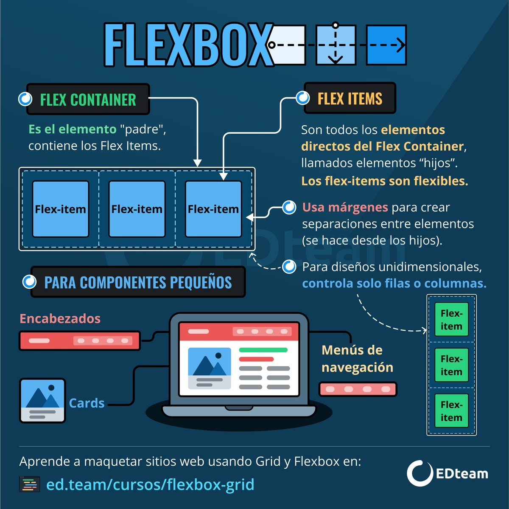

Flex Box
El Módulo de Caja Flexible, comúnmente llamado flexbox, fue diseñado como un modelo unidimensional de layout, y como un método que pueda ayudar a distribuir el espacio entre los ítems de una interfaz y mejorar las capacidades de alineación.
Cuando describimos a flexbox como unidimensional destacamos el hecho que flexbox maneja el layout en una sola dimensión a la vez ya sea como fila o como columna.

Elementos básicos de este nuevo esquema
contenedor: Es el elemento padre que tendrá en su interior cada uno de los ítems flexibles. Observa que al contrario que muchas otras estructuras CSS, por norma general, en Flex establecemos las propiedades al elemento padre.
Eje principal: Los contenedores flexibles tendrán una orientación principal específica. Por defecto, es en horizontal (en fila).
Eje secundario: De la misma forma, los contenedores flexibles tendrán una orientación secundaria, perpendicular a la principal. Si la principal es en horizontal, la secundaria será en vertical, y viceversa.
Ítem: Cada uno de los hijos flexibles que tendrá el contenedor en su interior.

Ventajas y desventajas de Flex Box
Las ventajas son las siguientes:
-Crear una malla formateada para el contenido, de forma más rápida
-Permite escalar constantemente para los elementos flexibles, que en el pasado ha sido una verdadera lucha
-Mover elementos flexibles sin cambiar el margen de ganancia
-Existe un montón de opciones para espaciar los elementos flexibles dentro del FlexBox, tanto horizontal como verticalmente
-Semántica HTML.
Las desventajas son las siguientes:
-En la actualidad, casi ningún navegador antiguo cuenta con soporte para Flexbox. IE8 e IE9 no son compatibles, y IE10 utiliza una vieja sintaxis de FlexBox. Aunque las últimas versiones de navegadores cuentan con soporte para FlexBox, se requiere el uso de prefijos, para la mayoría de los navegadores.
-Puede ser bastante complejo para los principiantes
-Puede complicarse si se añaden otros elementos de bloque después de establecer las propiedades